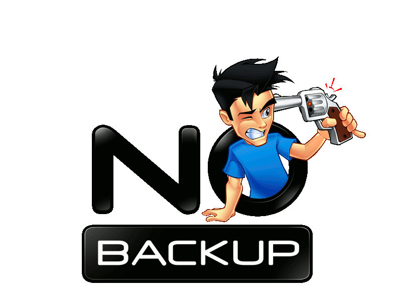

Synchronisatie
Op deze pagina hebben we het over synchronisatie van de informatie op je pc met andere pc's of op externe harde schijven.
 Een synchronisatieprogramma (van een
folder) is essentieel om je gegevens regelmatig te backuppen
(veiligheidskopie nemen) op bijvoorbeeld een externe harde schijf.
Een backup van je gegevens beschermt je tegen een crash van je
harde schijf en is dus eigenlijk essentieel!
Een synchronisatieprogramma (van een
folder) is essentieel om je gegevens regelmatig te backuppen
(veiligheidskopie nemen) op bijvoorbeeld een externe harde schijf.
Een backup van je gegevens beschermt je tegen een crash van je
harde schijf en is dus eigenlijk essentieel!
Hieronder
staan verschillende synchronisatieprogramma's die onderling een
beetje verschillen: 64 bit versus Nederlands versus automatische
synchronisatie. Je kan er eentje kiezen op basis van extra wensen.
Je kan ook een backup nemen door de bestanden op een CD (DVD) te branden.
Naast een backup van je gegevens is het zeer aangewezen ook een backup van je Windows partitie (= de partitie waar je Windows software is geprogrammeerd, meestal de C schijf) te maken met een programma zoals bijvoorbeeld Ping. Dit beschermt je tegen een crash van je harde schijf of wanneer je pc ineens 'zeer eigenaardig' zou gaan doen.
Er is een verschil tussen de backup van de partitie waar je Windows op staat en de backup van je gegevens. Om je Windows 'terug te plaatsen' moet je kunnen vertrekken vanaf een pc 'waar niets op staat, ook geen Windows want die wil je net herstellen. Voor het herstellen van gegevens kan je vertrekken vanaf een pc waar wel een Windows op draait.
Een programma zoals dropbox is ook heel interessant, want je kan er verschillende computers mee 'synchroon' houden én je gegevens worden automatisch bewaard, zodat je ze kan herstellen zelfs na een verkeerde wisoperatie!
Je kan dus best een keuze maken uit:
- Dropbox of Google Drive of SkyDrive of BoxSync of Transip Stack.
- Synctoy of Freefilesync of Puresync
- Zie de rubriek backup voor meer mogelijkheden: Ping, Paragon backup and recovery, Macrium reflect, ....
Opgelet: de installatieprogramma's veranderen zeer regelmatig. Het verdient aanbeveling niet de lokale kopie te gebruiken (die kan enkele maanden achterlopen) maar eerder telkens de kopie van de website van de ontwikkelaar te gebruiken!
Korte bespreking van de voor- en nadelen van Dropbox - Google Drive - Onedrive - BoxSync - Transip Stack:
- Voordelen
voor alle app's:
- link meesturen in vb. een e-mail om grote bestanden te kunnen afleveren of anderen toegang te geven tot bestanden
- gewiste bestanden (tijdelijk) herstelbaar
- app onder Windows, Android en IOs: synchronisatie op meerdere toestellen
- uploaden van foto's van mobiele apparaten
- Dropbox:
- beperkt tot 2GB
- versiebeheer: je kan oudere versies opvragen
- sharen van folders met andere gebruikers
- Box
Sync:
- beperkt tot 10GB
- versiebeheer alleen in de betalende versie
- sharen van folders met andere gebruikers
- Onedrive:
- beperkt tot 5GB
- sharen van folders met andere gebruikers
- Office documenten bewerkbaar in webbrowser
- Google
drive:
- beperkt tot 15GB (in combinatie met mailbox)
- sharen van folders met andere gebruikers
- Office documenten bewerkbaar in webbrowser
- Mega:
- 15GB
De lokale kopies van de programma's kan je hier vinden.
Naam: Dropbox
Categorie: synchronisatie van een folder over meerdere computers via het internet
Waardeoordeel: 5
Waardeoordeel op een schaal van 5 .. 1 (5='need to have', 3='good
to have', 1='nice to have')
Beschrijving: zie hoger
Naam: BoxSync
Categorie: synchronisatie van een folder via het internet
Waardeoordeel: 4
Waardeoordeel op een schaal van 5 .. 1 (5='need to have', 3='good
to have', 1='nice to have')
Beschrijving: zie hoger. Let op: er is een verschil tussen Box Sync en Box. De Box Sync applicatie (die je niet meer kan vinden) doet een permanente synchronisatie van de bestanden op je computer. De nieuwere Box applicatie doet hetzelfde, maar bewaart op je computer alleen recent gelezen bestanden.
Naam: Google drive
Categorie: synchronisatie van een folder via het internet
Waardeoordeel: 4
Waardeoordeel op een schaal van 5 .. 1 (5='need to have', 3='good
to have', 1='nice to have')
Beschrijving: zie hoger Startpagina
Naam: Onedrive
Categorie: synchronisatie van een folder via het internet
Waardeoordeel: 5
Waardeoordeel op een schaal van 5 .. 1 (5='need to have', 3='good
to have', 1='nice to have')
Beschrijving: zie hoger. Onedrive is standaard geïnstalleerd op elke Windows 10 computer!
Naam: Mega
Categorie: synchronisatie van een folder via het internet
Waardeoordeel: 3
Waardeoordeel op een schaal van 5 .. 1 (5='need to have', 3='good
to have', 1='nice to have')
Beschrijving: synchronisatie van een folder over meerdere computers (tot 15GB in de gratis versie) via het internet. Het is een bedrijf in Nieuw-Zeeland! Het is de opvolger van de zeer populaire site 'Megaupload'. Sommige netwerkproviders blokkeren de toegang: in dat geval gebruik je best IP adressen 8.8.8.8 en/of 8.8.4.4 als DNS servers (de opgegeven IP adressen zijn de DNS servers van Google)!
Naam: Freefilesync
Categorie: synchronisatie van een folder
Waardeoordeel: 5
Waardeoordeel op een schaal van 5 .. 1 (5='need to have', 3='good
to have', 1='nice to have')
Beschrijving: synchronisatie van een folder met vb. een externe harde schijf. Interessant voor backups. Werkt in twee stappen: eerst een lijst opstellen van verschillende bestanden en dan synchroniseren. Nederlands. Geen automatische synchronisatie. Werkt ook op oudere versies van Windows, zelfs Windows 2000.
Naam: Puresync
Categorie: synchronisatie van een folder
Waardeoordeel: 1
Waardeoordeel op een schaal van 5 .. 1 (5='need to have', 3='good
to have', 1='nice to have')
Download van internet niet meer beschikbaar
Beschrijving: synchronisatie van een folder met vb. een externe harde schijf. Interessant voor backups. Dit programma heeft als speciale functie dat de synchronisatie automatisch kan lopen, bijvoorbeeld op bepaalde momenten, bij veranderen van een bestand, bij het afsluiten van het systeem, bij het opstarten, wanneer de pc een tijdje niet wordt gebruikt, ... . Dit is een interessante functie als men twee schijven permanent synchroon wil houden.